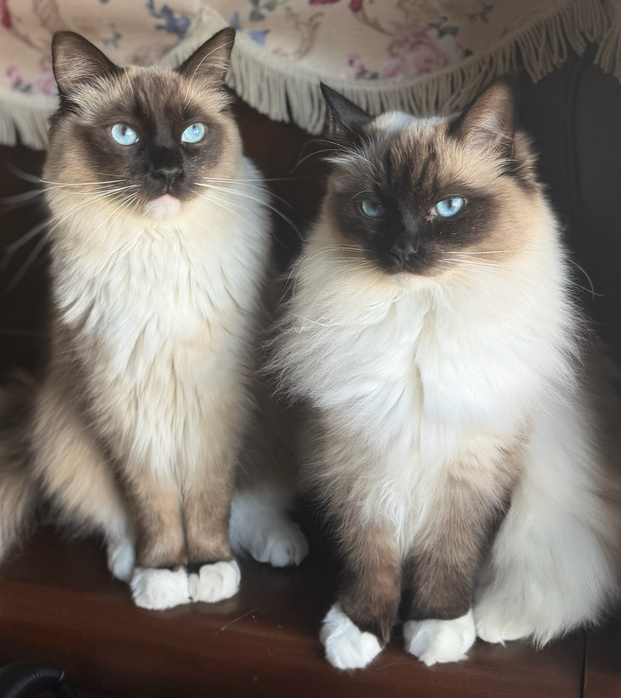

里親様からのお便り
テオくん・リルちゃん
1歳のお誕生日を迎えたテオくんとリルちゃん。毎日元気いっぱいに過ごしている様子を、ご家族様がお写真と一緒に届けてくださいました。
記念日にはたくさん写真を撮ってもらい、ふたりとも可愛く、かっこよく成長してくれています。
テオくんはしゅっとした表情に、リルちゃんはふわふわの被毛でまん丸に見えるほどに。ふたりの成長を見せていただけることは、ブリーダーとして本当に幸せな時間です。
ご家族様が日々の体調や食事まで丁寧に見守ってくださっている、あたたかなお便りです。